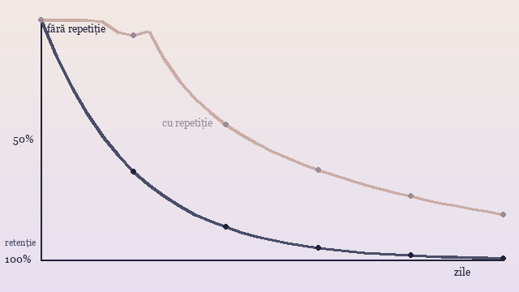
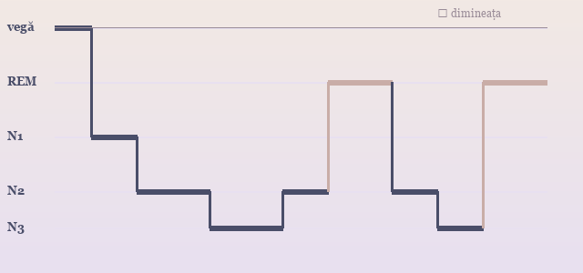

Exercițiu de atenție, în trei pași
Apasă Space și numără în liniște respirațiile până la zece; dacă te rătăcești, reia de la unu.
Pentru ritm, poți folosi metronomul din playerul de mai jos — o bătaie, o respirație.
|
PSIHOLOGIA UMANĂ · GHID · PAGINA 2 DIN 4 Ghidul — mintea, pas cu pasPercepție, memorie, emoții, somn: ce spune cercetarea |

|
|
1. Percepția și atenția
Percepția nu este o fotografie a lumii: creierul construiește imaginea, completând lacunele  <picture> și <source>.
În fișa de laborator, cifrele studiului se scriu astfel: 2. Memoria și uitarea
Memoria are trei etape — codarea, stocarea și reactualizarea. Uitarea nu este un defect,
ci un filtru: creierul păstrează ce e folosit. Formula din introducere,
Surse: curbele grafice sunt modelate pe datele clasice ale lui Ebbinghaus (1885). 3. Emoțiile
O emoție este un răspuns scurt, intens, cu declanșator clar; dispoziția e mai lungă, dar mai slabă,
Exercițiul de respirație ajută la calmarea fricii; găsești videoclipul pe
pagina multimedia, iar sunetul de relaxare — la secțiunea audio. 4. Somnul
Adulții au nevoie de 7–9 ore. N1 și N2 sunt fazele de tranziție; N3 este somnul profund; Exercițiu de atenție, în trei pași
Apasă Space și numără în liniște respirațiile până la zece; dacă te rătăcești, reia de la unu. 5. Dezvoltarea creieruluiLa naștere, copilul are mai puține legături între neuroni decât la 3 ani; în adolescență are loc prunarea sinaptică: legăturile neutilizate se sting, iar cele folosite se întăresc. Vezi diagrama de mai jos. 
Mai multe despre plasticitate, pe Wikipedia — Neuroplasticitate. 6. Cum e realizat site-ul
Site-ul este scris doar cu HTML: culorile vin din atribute (
NOTĂ: PENTRU SPRIJIN PSIHOLOGIC REAL, ADRESEAZĂ-TE UNUI SPECIALIST. |